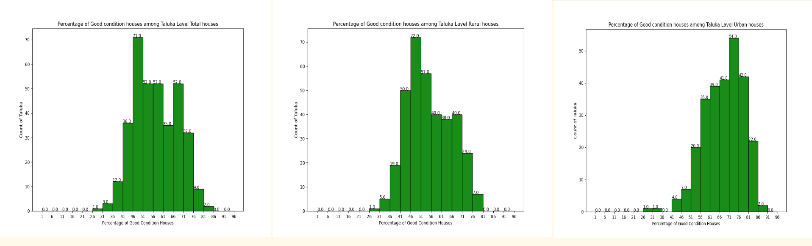
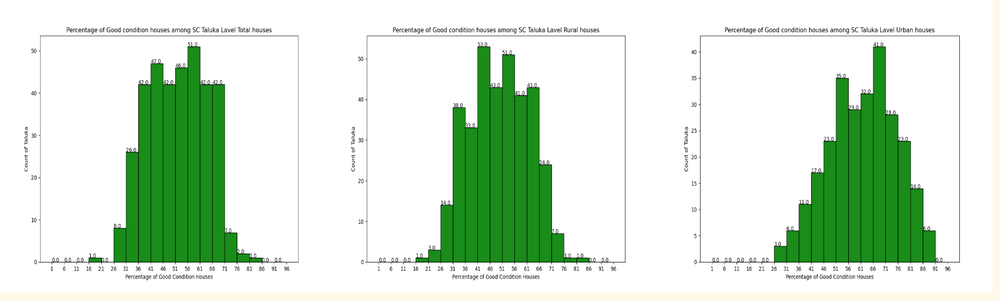
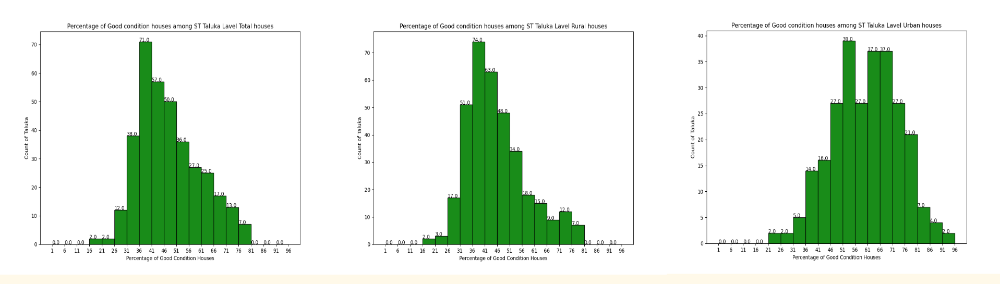

As we have several data types like district, taluka, village, and town level (Total, Rural, and Urban) for Demography and Households, we can do several combinations of analyses based on our requirements. However, for demonstration here, we are just adding some analysis only for taluka level households condition of census house. Households condition of Census House has several secondary attributes even though these secondary attributes have several bottom attributes to explain the good condition of census houses elaborately on that time.
Now adding several combinations of the histogram for understanding the number of households good condition of the census house from households by amenities of General, Scheduled Caste, and Scheduled Tribes (Total/Rural/Urban).
Below is an example of the percentage of census general (Total/Rural/Urban) good condition houses. We can see that on average most of the taluka have more than 50 percent good houses, but urban taluka have more good condition houses than rural taluka good houses.
Below is an example of the percentage of census Scheduled Caste (Total/Rural/Urban) good condition houses. Most of the total and Rural taluka have between 30 to 70 percent good condition, but in urban the situation is different. For urban, most of the taluka has good condition houses in between 40 to 85 percent. So we can say the Scheduled Caste urban taluka has a higher percentage of good condition houses as compared with total and rural.
Below is an example of the percentage of census Scheduled Tribe (Total/Rural/Urban) good condition houses. Most of the total and Rural taluka have between 35 to 80 percent good condition, but in urban the situation is different. For urban, most of the taluka has good condition houses in between 30 to 96 percent. So we can say the Scheduled Tribe urban taluka has a higher percentage of good condition houses as compared with Scheduled Tribe total and rural.
Below is a scatter plot example of the percentage of census Scheduled Caste or Scheduled Tribes taluka wise total good house versus general population taluka wise total good house percentage where we can see that a green dot means a taluka that has general and Scheduled Caste position in the plots. From the scatter plot, we can say that many Scheduled Caste and Scheduled Tribes taluka has a low percentage of the good house compared to the general population.

Below is a scatter plot example of the percentage of census Scheduled Caste taluka wise rural and urban good house versus general population taluka wise rural and urban good house percentage. Where we can see that a green dot means a taluka that has general rural and Scheduled Caste rural position in the plots beside that red dot means general urban and Scheduled Caste urban position. From the scatter plot, we can say that rural taluka has low good houses as compared to urban taluka. Besides that, many general rural and urban taluka have a higher percentage of good houses than Scheduled Caste rural and urban taluka.

Below is a scatter plot example of the percentage of census Scheduled Tribe taluka wise rural and urban good house versus general population taluka wise rural and urban good house percentage. Where we can see that a green dot means a taluka that has general rural and Scheduled Tribe rural position in the plots beside that red dot means general urban and Scheduled Tribe urban position. From the scatter plot, we can say that rural taluka has low good houses as compared to urban taluka. Besides that, many general rural and urban taluka have a higher percentage of good houses than Scheduled Tribe rural and urban taluka. However, all of this, a Scheduled Tribe urban taluka has a very low percentage of the good house other than general.

Below is a scatter plot example of the percentage of census Scheduled Caste taluka wise rural and urban good house versus Scheduled Tribe taluka wise rural and urban good house percentage. Where we can see that a green dot means a taluka that has Scheduled Caste and Scheduled Tribe rural position in the plots beside that red dot means Scheduled Caste and Scheduled Tribe urban position. From the scatter plot, we can say that rural taluka has low good houses as compared to urban taluka. However, all of this, a Scheduled Tribe urban taluka has a very low percentage of the good house compared to Schedule Caste urban good house percentage.

Below is a scatter plot example of the percentage of census Scheduled Caste taluka wise total, rural, and urban good house versus General taluka wise total, rural, and urban good house percentage. Where we can see that a yellow dot means a taluka that has Scheduled Caste and General rural position in the plots beside that green dot means Scheduled Caste and General rural position, and a red dot means Scheduled Caste and general urban position. From the scatter plot, we can say that rural taluka has low good houses as compared to urban taluka. Besides that, many of General taluka (total, rural, and urban) have a higher percentage of good condition of houses as compared to Scheduled Caste good condition house percentage.
 vs. Genral (TRU).png)
Below is a scatter plot example of the percentage of census Scheduled Tribe taluka wise total, rural, and urban good house versus General taluka wise total, rural, and urban good house percentage. Where we can see that a yellow dot means a taluka that has Scheduled Tribe and General rural position in the plots beside that green dot means Scheduled Tribe and General rural position, and a red dot means Scheduled Tribe and General urban position. From the scatter plot, we can say that rural taluka has low good houses as compared to urban taluka. Besides that, many of General taluka (total, rural, and urban) have a higher percentage of good condition of houses as compared to Scheduled Tribe good condition house percentage. However, all of this, a Scheduled Tribe urban taluka has a very low percentage of the good house compared to General urban good house percentage.
 vs. Genral (TRU).png)